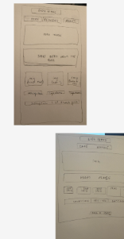
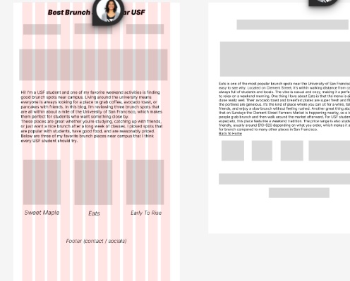
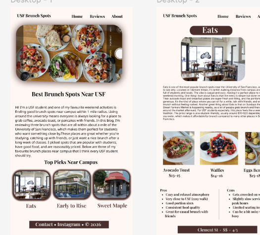

Individual class project · Web design · Figma · HTML / CSS
Brunch Spots Near USF
I created a brunch guide to help USF students explore places near campus. Photographs, personal reviews, and clear navigation bring the recommendations together.
Open live project ↗The starting point
There are plenty of places around campus, but deciding where to go can take a little digging. I wanted a small guide that feels like a recommendation from a friend.
From paper to the web
I moved from paper sketches to wireframes and finished layouts in Figma, then a coded website. I grouped the home page around an introduction and a few places to explore.
Design decisions
Food photography gives the page its focus. Dedicated review pages let visitors explore one place at a time, with shared navigation keeping the site connected.
On paper.
Then on screen.


